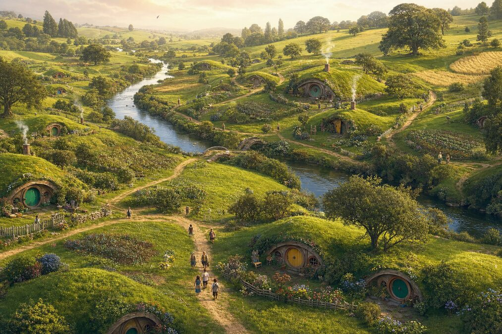
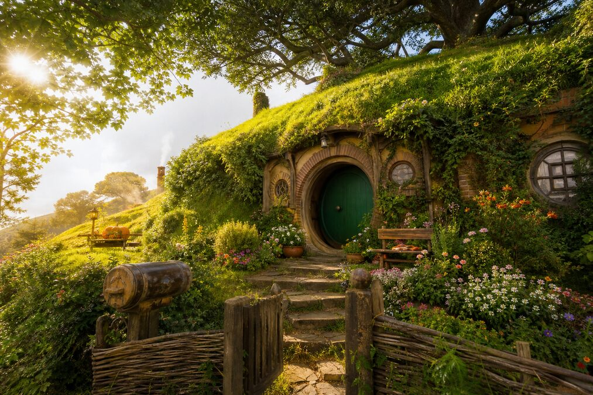
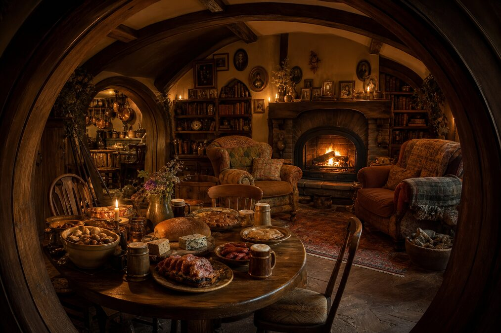
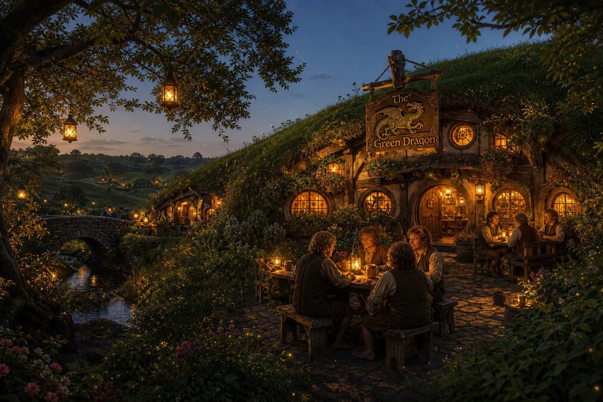
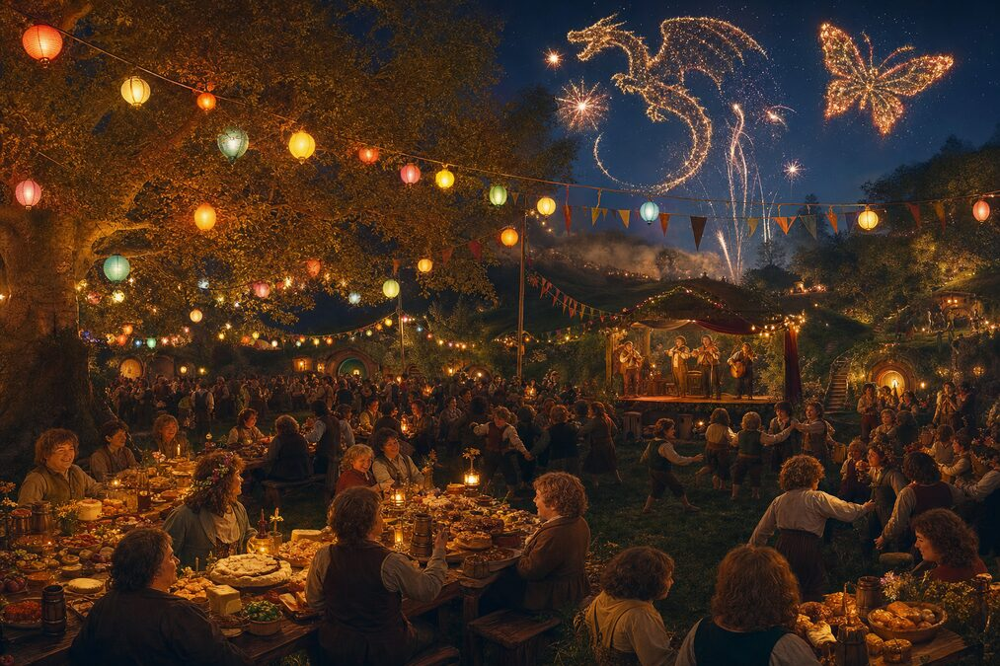
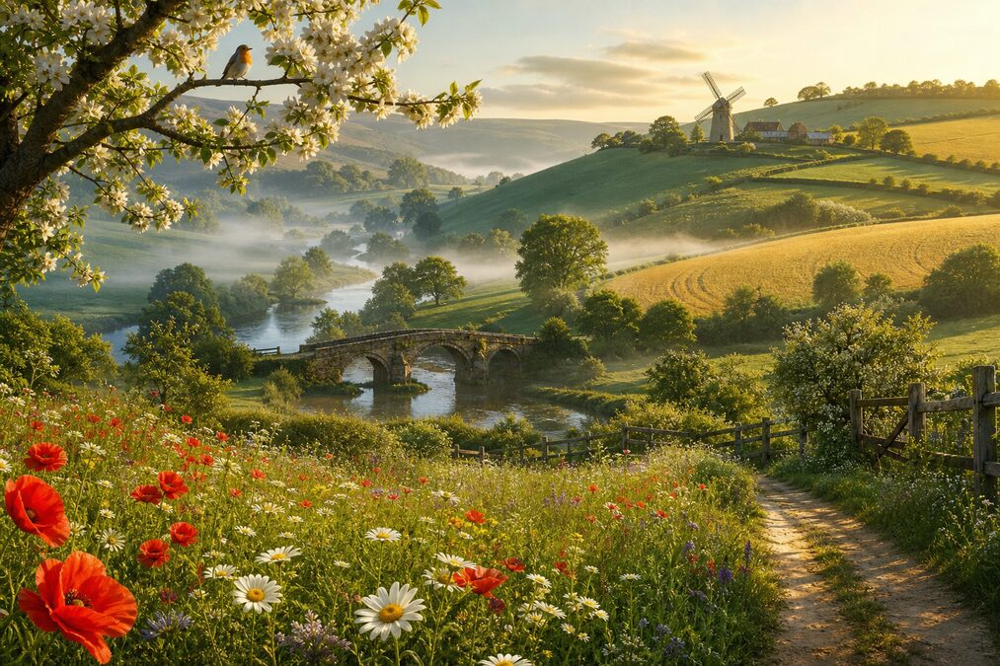

"What about second breakfast?" — "I don't think he knows about second breakfast, Pip."
"Even the smallest person can change the course of the future."
They crossed 65,000 years of history.
They walked every civilization from the Dreaming to the Stars.
They fought in Mordor. They left on the Departure. They arrived on Arrakis.
They built a Castle. They ate at Milliways. They had tea with Arthur.
They rocked the Universe.
And then they came HOME.
Green hills. Round door. Second breakfast at 9.
The kettle's on. The garden needs tending.
The road goes ever on — but it always leads back here.